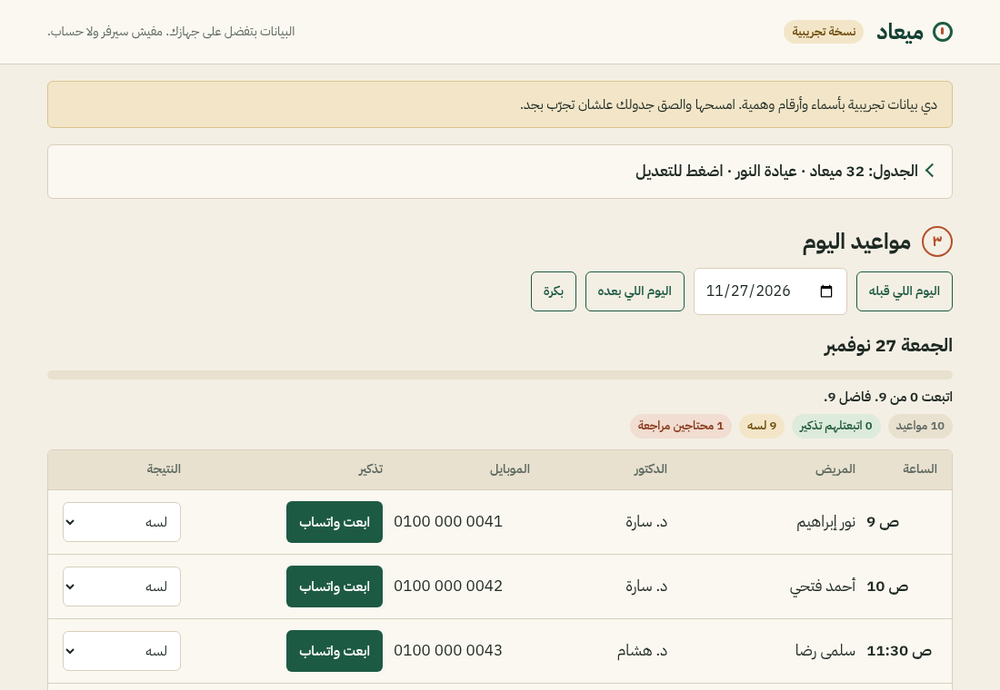

التجربة
٧ أيام مجانًا
- على جدولك الحقيقي، مش بيانات تجريبية بس
- من غير كارت ومن غير حساب
- مرة واحدة لكل رقم عيادة
للعيادات اللي لسه شغالة على إكسل أو كشكول
الصق جدول مواعيد بكرة، ميعاد يطلّعلك رسالة واتساب جاهزة باسم كل مريض وساعته ودكتوره. السكرتيرة تدوس «ابعت» وتخلص في دقايق. وبعد كام أسبوع تشوف من أرقامك انت: الغياب نزل ولا لأ.
٧ أيام تجربة مجانية من غير كارت، وبتشتغل من المتصفح. بعدها اشتراك شهري 199 جنيه.
أقوى دليل لقيته مش مصري. مراجعة Cochrane الشهيرة جمعت 8 تجارب عشوائية على 6,615 مريض. التذكير برسالة على الموبايل رفع نسبة الحضور من حوالي 678 لـ 773 في الألف مقارنة بعدم التذكير، يعني خطر الحضور 1.14 مرة. ونفس الأثر تقريباً زي مكالمة تليفون، بتكلفة أقل. [١]
حدود الدليل: التجارب دي في دول تانية ومن سنة 2013، وجودة الدليل «متوسطة». معنديش رقم مصري موثوق لنسبة الغياب في العيادات. المدونات اللي بتتكلم عن غياب 25% كتبتها شركات برمجيات بتبيع الحل، فاعتبرها مثال مش إحصائية. [٢]
علشان كده ميعاد مبني يقيس غيابك انت قبل وبعد، مش يوعدك برقم.
انسخ الأعمدة من إكسل أو شيتس. بيفهم عناوين عربي وإنجليزي، وأرقام عربي وهندي، وتواريخ «27/11/2026»، وساعات «5 م». أي صف فيه رقم غلط بيتعلّم قبل ما تبعت.
الرسالة بتتكتب باسم المريض وساعة الميعاد والدكتور. تقدر تعدّل النص زي ما تحب.
الزرار بيفتح واتساب برسالة جاهزة على رقم المريض، من رقم العيادة. انت اللي بتدوس إرسال. مفيش إرسال جماعي أو تلقائي، وده أبعد عن سلوك السبام. في المقابل ده شغل يدوي، حوالي ثواني لكل مريض.
بعد كام أسبوع الصفحة بتقارن غياب اللي اتبعتلهم تذكير بغياب اللي لأ، وتحسبلك الكشوفات الضايعة بالجنيه.

الأداة بتشتغل بالفعل على جدول تجريبي (أسماء وأرقام وهمية). افتحها وجرّب.
اكتب أرقام عيادتك. مفيش رقم جاهز هنا، علشان أنا معنديش رقم موثوق عن عيادتك.
افتراض مني مش وعد. حسابي من جدول Cochrane: غياب التجارب نزل حوالي 30% نسبياً (من 322 لـ 227 في الألف)، وده في دول تانية، فخدت رقم أقل بكتير كبداية.
اشتراك شهري واحد. التجربة من غير كارت ومن غير ما تدفع.
مش محتاج ميعاد لو عيادتك عليها برنامج فيه تذكيرات واتساب شغالة. السوق مليان برامج عيادات عربي رخيصة. مثلاً Zahw بيعلن 200 جنيه في الشهر لدكتور و3 موظفين ومعاها تجربة 14 يوم [٣]، و DentoGrid بيبدأ من 1,000 جنيه في الشهر وبينقل بيانات إكسل مجاناً [٤]. ولو عايز نظام كامل، دي حلول جدية.
ميعاد يناسبك لو عندك جدول إكسل أو كشكول شغال وعارف إنك مش هتنقل لنظام جديد الشهر ده، وعايز تبدأ تذكير بكرة من غير تدريب ولا نقل بيانات.
أكبر نقطة ضعف: الإرسال يدوي. لو عندك 40 كشف في اليوم، ده شغل. وده تحديداً اللي لسه مجرّبناش ينفع ولا لأ مع سكرتيرة عيادة مزحومة، وعلشان كده بنجرّب مع 10 عيادات الأول.
الخصوصية: بيانات المرضى مش بتتبعت لأي سيرفر، كلها في متصفحك. السيرفر الوحيد بيحفظ اسم العيادة وموبايلها وكود الاشتراك بس. لكن أرقام المرضى بيانات شخصية، والعيادة هي المسؤولة تاخد موافقة المرضى على رسايل العيادة. قانون حماية البيانات الشخصية المصري 151 لسنة 2020 ولائحته التنفيذية بيعتبروا البيانات الصحية حساسة [٥]. ده مش استشارة قانونية.
لا. أي واتساب على موبايل السكرتارية يشتغل، لأن الزرار بيستخدم رابط واتساب الرسمي «اضغط للمحادثة» [٦]. واتساب بزنس أحسن علشان الرد السريع والكتالوج.
بتتخزن في متصفحك على الجهاز ده بس. لو مسحت بيانات المتصفح أو غيّرت الجهاز بتضيع، علشان كده فيه زرار تنزيل CSV.
لا. الدليل العلمي بيقول التذكير بيساعد في المتوسط، مش في كل عيادة. علشان كده الأداة بتحسب أرقامك انت.
ممكن حد يتضايق، ومفيش دليل مصري نقيسه بيه. علشان كده ابعت بس لمريض وافق يستقبل رسايل من العيادة، واسأله مرة واحدة عند الحجز. الرسالة قصيرة وفيها اسم العيادة ووسيلة يرد بيها «تأكيد» أو يلغي. والإرسال بإيدك رسالة رسالة، مفيش رسايل جماعية.
الأداة متصممة إن شغلها يبقى: تلصق الجدول، تدوس «ابعت» جنب كل اسم، وتعلّم «حضر» أو «غاب» بعد الميعاد. مفيش حساب ولا كلمة سر. جرّبها على بيانات تجريبية قبل ما تحط بيانات حقيقية.
الأداة ليها تجربة مجانية 7 أيام من غير كارت، وبعدها اشتراك شهري بكود. وبيانات التجربة التجريبية بأسماء وهمية شغالة دايمًا من غير اشتراك.
الفكرة نفسها تنفع لأي حاجة بمواعيد. لكن الرسالة والأرقام متصممة للعيادات، ومحدش جرّبها في غير كده لسه، فمش هنوعد بحاجة قبل ما نجرّب.